NAVE Núcleo de Atividade Virtual de Ensino
Uma experiência imersiva de alta tecnologia para o ensino de Medicina e Anatomia Humana. Explore estruturas anatômicas em 3D com 10 óculos de Realidade Virtual de última geração.
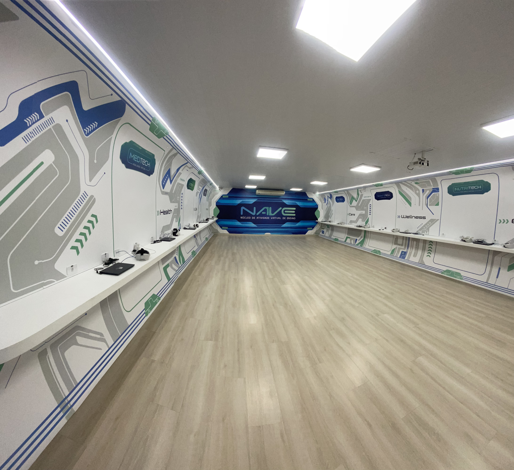
Espaço NAVE • UniFOA
Laboratório de Realidade Virtual
A Revolução do Aprendizado Científico
O Núcleo de Atividade Virtual de Ensino une a precisão anatômica à imersão digital, transformando a forma como futuros médicos e profissionais de saúde compreendem a vida humana.
10 Óculos de RV
Equipamentos individuais de última geração que permitem visualização estereoscópica em tempo real com controle tátil e navegação em 360 graus.
Software de Anatomia 3D
Aplicativo especializado para dissecação virtual, isolamento de sistemas corporais, rotações de alta precisão e observação de microestruturas.
Foco em Medicina & Saúde
Ambiente ideal para metodologias ativas, aulas práticas guiadas por docentes e estudos autônomos dos alunos de Medicina e áreas biológicas.
Do livro para a experiência tridimensional
Na sala NAVE, o estudante deixa de ser um observador passivo. É possível caminhar ao redor das estruturas anatômicas, separar camadas de tecidos, pausar batimentos cardíacos e inspecionar órgãos por ângulos impossíveis na anatomia tradicional.
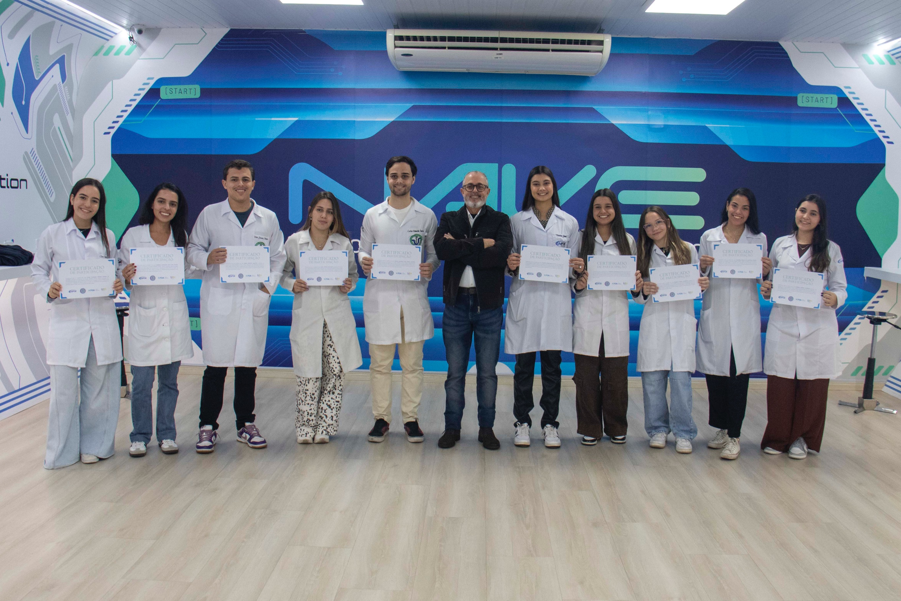
Infraestrutura NAVE UniFOA
Órgãos em Realidade Virtual
Explore os 13 órgãos disponíveis no aplicativo de RV da sala NAVE. Clique em qualquer card para inspecionar a estrutura anatômica em 3D interativo.
Como usar a sala NAVE
Assista ao tutorial rápido demonstrando a calibração dos óculos de RV, navegação pelos controles e escolha dos modelos anatômicos no aplicativo.
- Ajuste correto dos óculos na cabeça
- Seleção de órgãos e sistemas anatômicos
- Atalhos de rotação e zoom nos controles
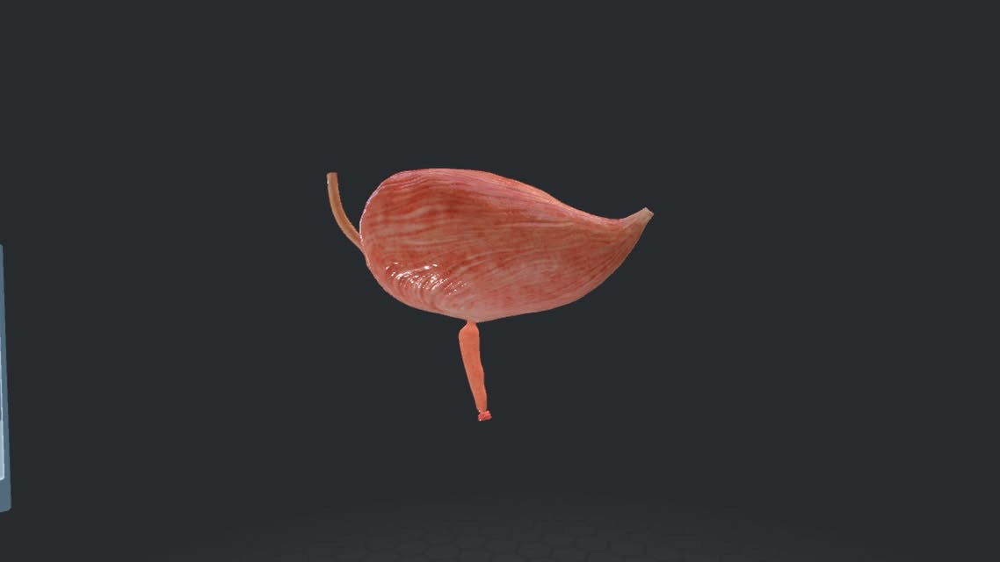
Urinário1. Bexiga
Armazenamento & Sistema Urinário
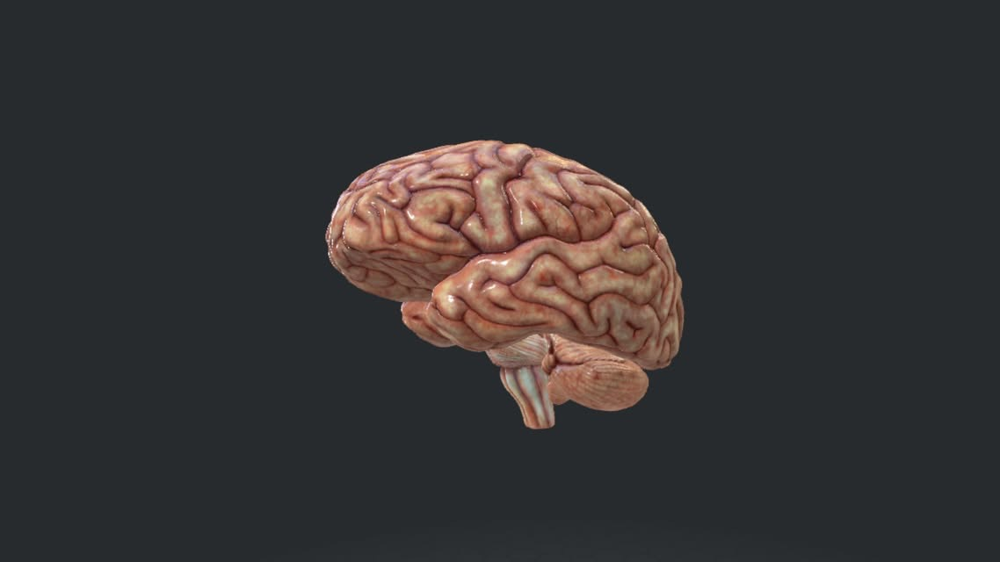
Nervoso2. Cérebro
Sistema Nervoso Central
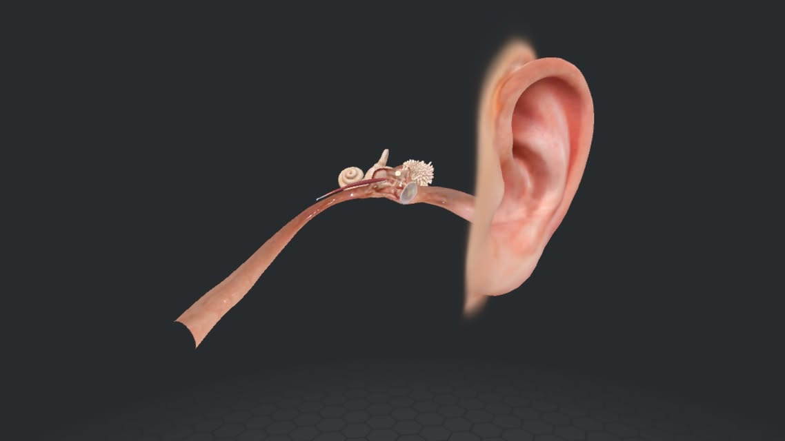
Auditivo3. Orelha
Audição & Equilíbrio
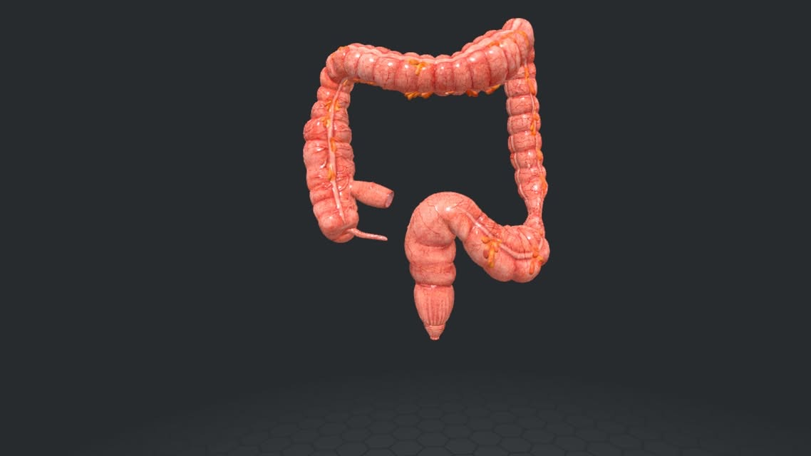
Digestório4. Intestinos
Absorção & Nutrição
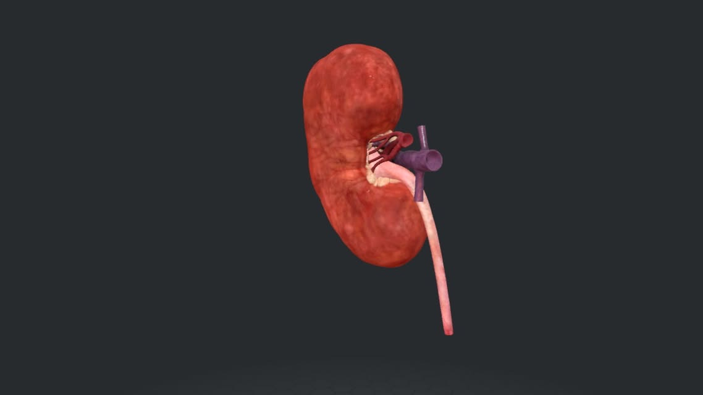
Excretor5. Rim
Filtragem Sangue & Homeostase
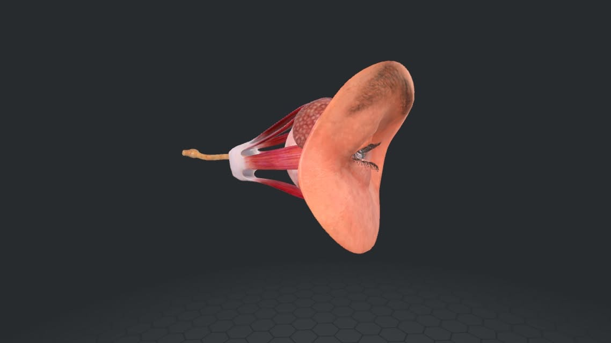
Visão6. Olho
Recepção Visual & Foco
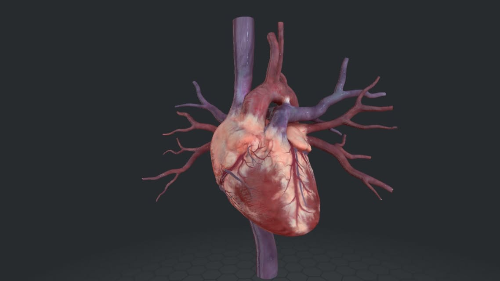
Circulatório7. Coração
Bomba Cardiovascular
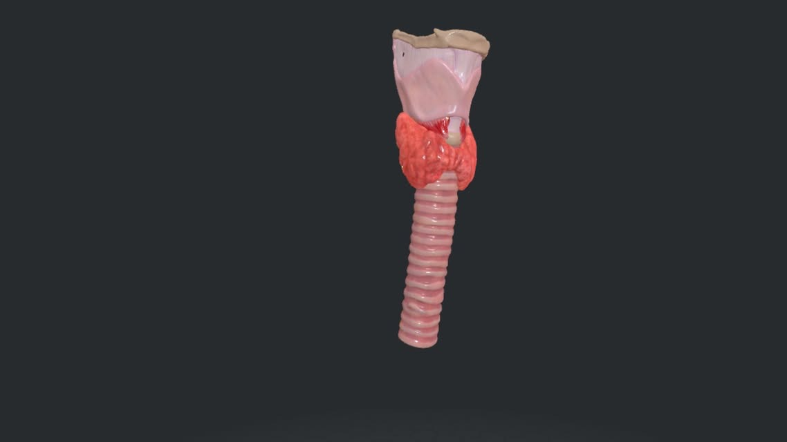
Fonação8. Laringe
Voz & Proteção Aérea
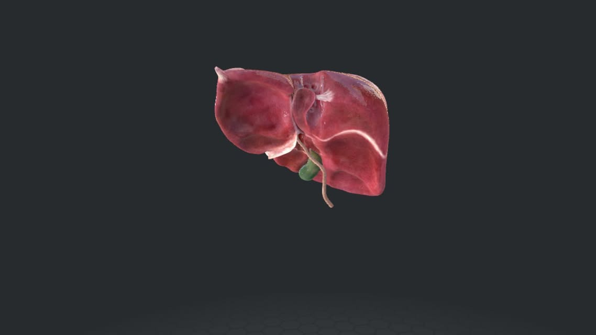
Metabólico9. Fígado
Processamento Metabólico
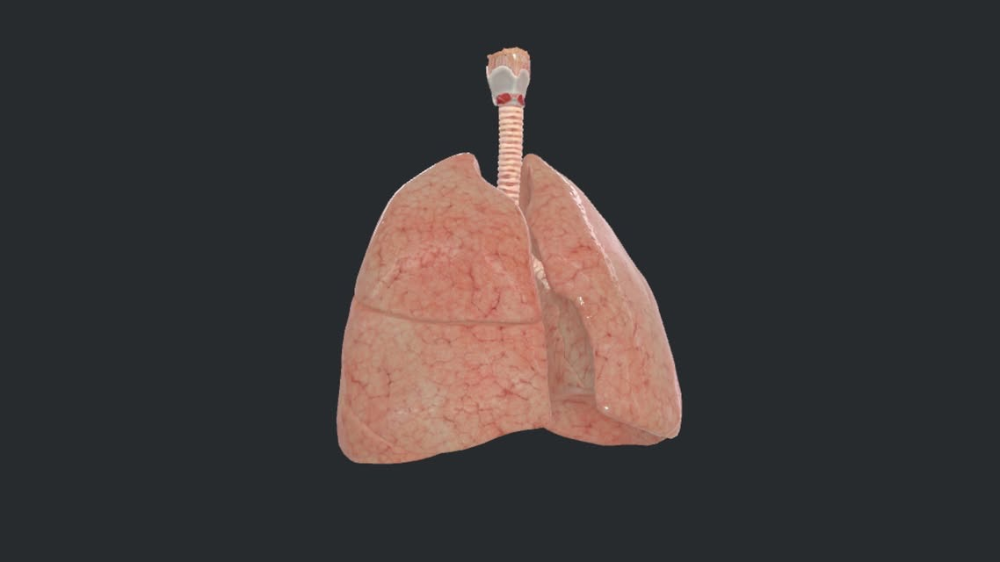
Respiratório10. Pulmões
Troca Gasosa & Hematose
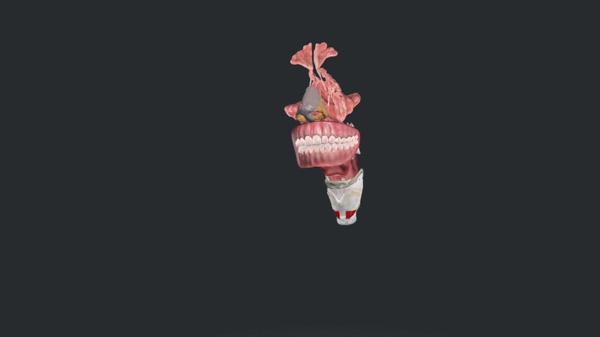
Vias Superiores11. Boca e Nariz
Olfato, Paladar e Entrada Aérea
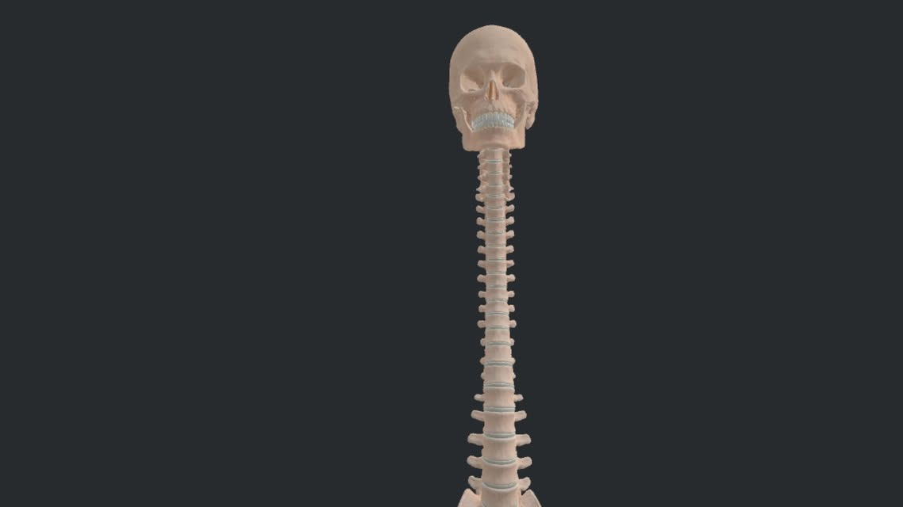
Esquelético12. Coluna Vertebral
Eixo & Proteção Medular
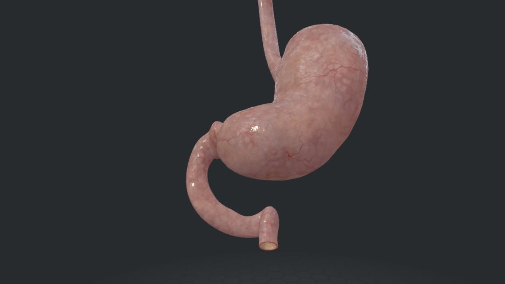
Digestório13. Estômago
Digestão Química Inicial
Transformando a Formação Médica com Imersão Virtual
O NAVE (Núcleo de Atividade Virtual de Ensino) da Faculdade UniFOA é um marco na inovação pedagógica do curso de Medicina. Integrando hardware de ponta e modelos anatômicos de alta fidelidade, o espaço capacita alunos e professores a explorarem a complexidade do corpo humano com nível de detalhe sem precedentes.
Aprendizado Colaborativo
Sessões integradas entre alunos e professores
Rigor Científico
Anatomia mapeada com altíssima precisão 3D
Siga no Instagram
Atualizações e bastidores das aulas
Link oficial: https://instagram.com/nave_unifoa